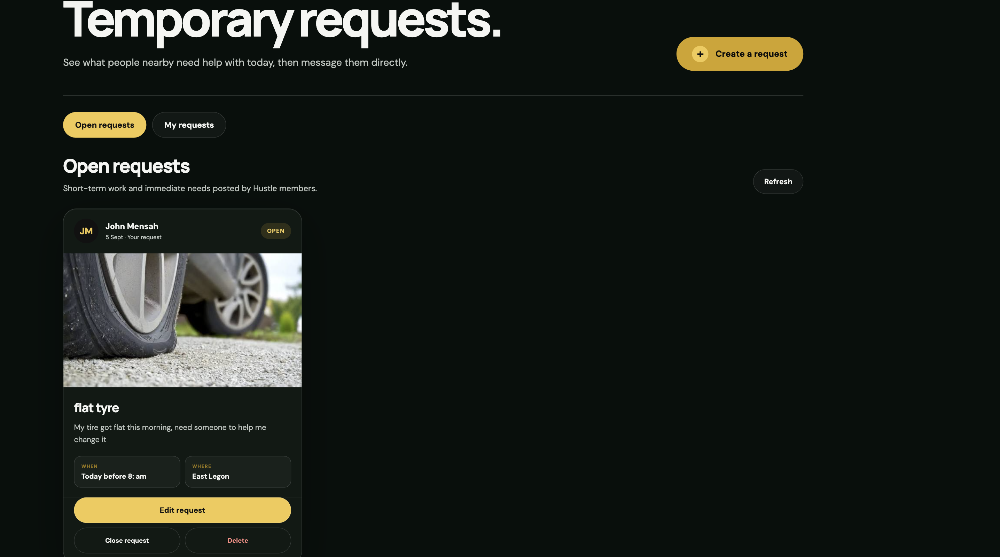

Find local talent
Browse service providers, review their work, check availability, and request a booking.
Featured project · 2026
A Ghana-first marketplace for discovering local services, shopping independent storefronts, and finding short-term help nearby.
01 · The idea
People often discover skilled providers, small businesses, and short-term work through scattered posts and word of mouth. That makes it difficult to compare options, manage requests, and build trust around an exchange.
I built Hustle to bring those activities into one Ghana-focused product: customers can find services, shop independent storefronts, or respond to immediate needs without switching between disconnected platforms.
Browse service providers, review their work, check availability, and request a booking.
Discover Ghanaian storefronts, products, variants, reviews, and ordering details.
Post or discover temporary requests when nearby help is needed quickly.
Search services, storefronts, products, locations, or open temporary requests.
Use messaging, booking requests, and order workflows to coordinate directly.
Profiles, reviews, reporting, moderation, and status updates support safer exchanges.
02 · Product experience
Hustle supports established service providers and storefront owners while also giving people a place to post immediate, short-term needs.


03 · Building it
Hustle uses Vite and TypeScript for the application, while Supabase supports authentication, Postgres data, storage, and realtime updates across messaging, bookings, storefront orders, reviews, and user profiles.
The shared application is packaged for iOS and Android with Capacitor. Native push notifications, reporting tools, and automated post moderation help the product operate across web and mobile as the marketplace grows.
A responsive interface for service discovery, commerce, and temporary work.
Authentication, Postgres, storage, realtime activity, and protected marketplace data.
The product is packaged for iOS and Android with native push support.
Reporting, listing rules, and automated screening support safer participation.
04 · What I learned
Services, products, and temporary requests each need different discovery and transaction flows. The design challenge was giving every mode the right tools while keeping navigation, messaging, and trust signals consistent.
Building Hustle pushed me to think in connected systems: provider availability, customer bookings, seller inventory, order states, realtime conversations, moderation, notifications, and mobile behavior all need to remain understandable as one product.
See the product in action